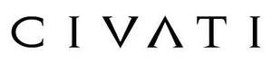

Trade Mark Journal No.2026/003 16 January 2026
UK00004314890 23 December 2025 (3,14,25)

- Class 3
- Room fragrancing preparations; Cleaning and fragrancing preparations; Air fragrancing preparations; Room fragrancing products; Perfuming preparations for the atmosphere; Fragrance preparations; Aromatherapy preparations; Air fragrance preparations; Room fragrances; Bath preparations; Preparations for the bath; Floor cleaning preparations; Fumigation preparations [perfumes]; Shower preparations; Preparations for the shower; Room scenting sprays; Cleaning preparations; Toiletry preparations; Wax melts [fragrancing preparations]; Cleaning preparations for fabrics; Carpet freshening preparations; Furbishing preparations; Cosmetic preparations for bath and shower; Perfumed lotions [toilet preparations]; Laundry preparations; Preparations for use in the bath or shower; Preparations for the bath and shower; Bath and shower preparations; Shower and bath preparations; Wallpaper cleaning preparations; Glass cleaning preparations; Toilet preparations; Oven cleaning preparations; Foam bath preparations; Foam cleaning preparations; Cosmetics preparations; Scented room sprays; Non-medicated bath preparations; Bath preparations (Non-medicated -); After-shave preparations; Room perfume sprays; Aftershave preparations; Car cleaning preparations; Perfumed body lotions [toilet preparations]; Baths (Cosmetic preparations for -); Cosmetic preparations for baths; Cleaning preparations for leather; Tanning preparations; Breath freshening preparations; Skincare preparations; Vehicle cleaning preparations; Breath freshening preparations for personal hygiene; Chemical laundry preparations; Make-up preparations; Moisturising preparations; Carpet cleaning preparations; Non-medicated toiletry preparations; Bath preparations for animals; Dishwashing preparations; Cosmetic preparations; Pre-shave preparations; Preparations for the conditioning of the body; Hand cleaning preparations; Fabric conditioning preparations; Hair cleaning preparations; Hairdressing preparations; Dry cleaning preparations; Cleaning preparations for automobiles; Bubble bath preparations [for cosmetic use]; Pedicure preparations; Cosmetic hair dressing preparations; Sanitary preparations being toiletries; Chemical cleaning preparations for household purposes; Shaving preparations; Essences for fragrancing; Oven cleaners [preparations]; Floor stripping preparations; Cleaning preparations for household purposes; Cleaning preparations in the form of foams; Washing preparations; Hair relaxing preparations; Laundry bleaching preparations; Bleaching preparations [laundry]; Suntanning preparations; Wipes incorporating cleaning preparations; Dewaxing preparations; Automotive cleaning preparations; Dry-cleaning preparations; Perfume oils for the manufacture of cosmetic preparations; Automobile cleaning preparations; Facial conditioning preparations; Non-medicated cosmetics and toiletry preparations; Bubble bath preparations; Bath preparations, not for medical purposes; Non-medicated massage preparations; Non-medicated toilet preparations; Tanning preparations [cosmetics]; Room perfumes in spray form.
- Class 14
- Crucifixes of precious metal, other than jewellery; Jewellery boxes of precious metal; Jewellery in precious metals; Jewellery of precious metals; Jewellery caskets of precious metal; Necklaces of precious metal; Threads of precious metal [jewellery]; Jewellery incorporating precious stones; Jewellery made of precious stones; Earrings of precious metal; Crucifixes of precious metal, other than jewelry; Jewellery being articles of precious stones; Articles of jewellery with precious stones; Jewellery fashioned of precious metals; Jewellery boxes of precious metals; Jewellery cases of precious metal; Jewellery chain of precious metal for necklaces; Sculptures of precious metal; Rings [jewellery] made of precious metal; Wire of precious metal [jewellery]; Jewelry boxes of precious metal; Precious jewellery; Jewellery made of precious metals; Jewellery chain of precious metal for bracelets; Threads of precious metal [jewelry]; Jewelry caskets of precious metal; Jewellery plated with precious metals; Threads of precious metal [jewellery, jewelry (Am.)]; Jewellery chain of precious metal for anklets; Jewellery coated with precious metals; Chains made of precious metals [jewellery]; Bracelets of precious metal; Jewellery stones; Jewelry boxes of precious metals; Jewelry cases of precious metal; Jewellery in semi-precious metals; Wire of precious metal [jewellery, jewelry (Am.)]; Wire of precious metal [jewelry]; Articles of jewellery made of precious metal alloys; Jewellery cases [caskets] of precious metal; Ornaments for clothing [of precious metal]; Jewellery made of plated precious metals; Small jewellery boxes of precious metals; Jewellery being articles of precious metals; Identification bracelets of precious metal [jewelry]; Jewellery fashioned of semi-precious stones; Shoe ornaments of precious metal; Ornaments (Shoe -) of precious metal; Ornaments, made of or coated with precious or semi-precious metals or stones, or imitations thereof; Figurines of precious metal; Jewellery coated with precious metal alloys; Precious and semi-precious stones; Jewellery in non-precious metals; Jewellery made of non-precious metal; Sculptures made of precious metal; Sculptures made from precious metal; Chain mesh of precious metals [jewellery]; Statues of precious metal; Jewelry boxes, not of precious metal; Articles of jewellery made of precious metals; Statues and figurines, made of or coated with precious or semi-precious metals or stones, or imitations thereof; Jewellery fashioned from non-precious metals; Clothing ornaments of precious metals; Semi-finished articles of precious stones for use in the manufacture of jewellery; Jewellery made of crystal coated with precious metals; Ornamental sculptures made of precious metal; Cuff links of precious metals with semi-precious stones; Ornaments [statues] made of precious metal; Figurines of precious stones; Rings [jewellery] made of non-precious metal; Statuettes of precious metal; Articles of jewellery coated with precious metals; Jewelry cases [caskets] of precious metal; Personal ornaments of precious metal; Ingots of precious metal; Cuff links made of precious metals with semi-precious stones; Precious stones; Cuff links made of precious metals with precious stones; Ornamental figurines made of precious metal; Statues of precious metals; Jewelry charms in precious metals or coated therewith; Figurines of precious or semi precious stones; Statues of precious metal and their alloys; Precious gemstones; Rings of precious metal; Jewelry cases not of precious metal; Gemstones, pearls and precious metals, and imitations thereof; Lapel pins of precious metals [jewellery]; Hat ornaments of precious metal; Ornaments (Hat -) of precious metal; Precious and semi-precious gems; Small jewelry boxes, not of precious metal; Synthetic stones [jewellery]; Decorative pins of precious metal; Fancy keyrings of precious metals; Statuettes of precious metal and their alloys; Ornamental pins made of precious metal; Figurines [statuettes] of precious metal; Semi-finished articles of precious metals for use in the manufacture of jewellery; Unwrought precious stones; Ingots of precious metals; Articles of jewellery with ornamental stones; Alloys of precious metal; Precious metal alloys; Cases of precious metals for jewels; Artificial stones [precious or semi-precious]; Imitation precious stones; Precious metal trophies; Trinkets coated with precious metal; Boxes of precious metal; Figurines coated with precious metal; Spinel [precious stones]; Metal works of art [precious metal]; Decorative boxes made of precious metal; Busts of precious metal; Jewellery made of semi-precious materials.
- Class 25
- Parts of clothing, footwear and headgear; Clothing; Footwear; Gloves [clothing]; Gloves as clothing; Headbands [clothing]; Headbands for clothing; Visors [clothing]; Jackets [clothing]; Woolen clothing; Jackets being sports clothing; Knitwear [clothing]; Gloves for apparel; Jerseys [clothing]; Headgear for wear; Leather clothing; Clothing of leather; Leather (Clothing of -); Clothing for leisure wear; Footwear [excluding orthopedic footwear]; Ready-to-wear clothing; Athletic clothing; Sneakers [footwear]; Braces for clothing; Garments for protecting clothing; Clothing for sports; Sports clothing; Rainproof clothing; Oilskins [clothing]; Headgear; Muffs [clothing]; Wristbands [clothing]; Corsets [clothing, foundation garments]; Belts [clothing]; Belts for clothing; Chaps (clothing); Latex clothing; Waterproof clothing; Veils [clothing]; Gabardines [clothing]; Golf clothing, other than gloves; Collars [clothing]; Capes (clothing); Wooden shoes [footwear]; Bandeaux [clothing]; Aprons [clothing]; Kerchiefs [clothing]; Shorts [clothing]; Furs [clothing]; Men's clothing; Hoods [clothing]; Mitts [clothing]; Water-resistant clothing; Embroidered clothing; Footwear for sport; Footwear for use in sport; Insoles for footwear; Knitted clothing; Clothing for gymnastics; Clothing for wear in judo practices; Clothing for wear in wrestling games; Footwear for sports; Sports footwear; Footwear for snowboarding; Weatherproof clothing; Denims [clothing]; Leather belts [clothing]; Sports clothing [other than golf gloves]; Party hats [clothing]; Footwear for men; Athletic footwear; Flip-flops for use as footwear; Footwear for women; Windproof clothing; Trunks being clothing; Boas [clothing]; Casual clothing; Dance clothing; Jackets (Stuff -) [clothing]; Stuff jackets [clothing]; Bottoms [clothing]; Sports headgear [other than helmets]; Clothing for cycling; Maternity clothing; Clothing for horse-riding [other than riding hats]; Layettes [clothing]; Clothing layettes; Cashmere clothing; Casual footwear; Leather headwear; Leisure clothing; Hats (Paper -) [clothing]; Paper hats [clothing]; Fabric belts [clothing]; Sports garments.
Lutin IP Ltd.